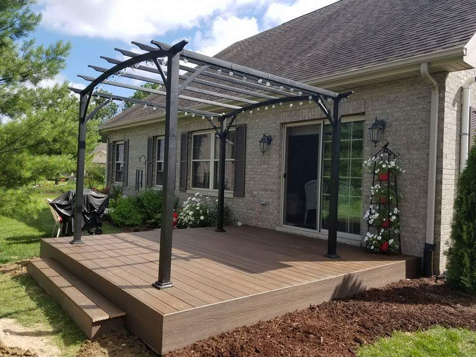

When homeowners pick a deck material, they usually default to whichever costs less right now. That logic makes sense until you're restaining every two years, replacing warped boards at year seven, or watching a composite deck that cost three times more hold its color perfectly a decade later.
There's no universally "best" decking material. There's only the best one for your specific situation — your budget, how much maintenance you're willing to do, how long you plan to stay in the house, and what an Indiana winter demands from outdoor wood. Here's how each option actually performs.
Pressure-Treated Lumber — The Workhouse Option
Pressure-treated (PT) pine is the most common deck material in the Midwest for a reason: it's affordable, widely available, and structurally sound. The lumber is chemically treated to resist rot, insects, and moisture — which matters in a climate that cycles between hot and humid summers and hard freezes.
- Cost: Lowest upfront cost of the three options — roughly $15–$25 per linear foot installed for a standard deck
- Lifespan: 15–25 years with regular maintenance; closer to 10–15 if neglected
- Appearance: Greenish tint when new from the treatment chemicals — fades to gray over 6–12 months. Takes stain well once fully dried (wait at least 6 months before sealing)
- Maintenance: Clean and reseal every 2–3 years. Watch for splitting, checking, and raised fasteners as the wood expands and contracts through freeze-thaw cycles
- Feel underfoot: Gets hot in direct afternoon sun, can splinter if not maintained
Pressure-treated is the right call if you're working with a tighter budget, plan to sell the house within 10 years, or want a material that's easy and cheap to repair. When a board goes bad, you replace one board — not a $400 composite panel.
Western Cedar — The Natural Choice
Cedar is what most homeowners picture when they imagine a "nice deck." It has a warm, natural appearance, holds stain beautifully, and smells good while you build it. It's also naturally rot-resistant and dimensionally stable compared to pressure-treated pine, which means less warping and fewer raised fasteners over time.
- Cost: 20–40% more than pressure-treated, typically $22–$35 per linear foot installed
- Lifespan: 20–30 years with good maintenance — longer than PT in our experience
- Appearance: Rich reddish-brown color that weathers to silver-gray if left unsealed. Holds color stain better and longer than PT
- Maintenance: Similar to PT — clean and reseal every 2–3 years — but the results look better and last longer per application
- Feel underfoot: Cooler than PT in direct sun, splinter-resistant when well-maintained
Cedar is the premium natural wood choice for homeowners who want a beautiful deck and are committed to maintaining it. If you're going to put the work in, cedar rewards you better than PT.
Want a straight recommendation for your specific property and budget?
Schedule a Free On-Site EstimateComposite Decking — The Long Game
Composite decking (Trex, TimberTech, Fiberon, and others) is made from a blend of wood fiber and recycled plastic. It doesn't rot, doesn't splinter, and doesn't need to be sealed or stained — ever. That pitch is accurate. What the brochures downplay is the upfront cost and a few real-world limitations.
- Cost: Roughly 2–3x the cost of pressure-treated. Expect $40–$70 per linear foot installed depending on brand and grade
- Lifespan: 25–30 years — most quality brands carry 25-year warranties against fading, staining, and structural defects
- Appearance: Consistent color and texture that holds for years. Modern composite looks substantially more natural than early generations of the product
- Maintenance: Annual cleaning with soap and water. No sealing, no staining, no refinishing
- Feel underfoot: Gets hotter than wood in direct sun — composite can reach 150°F on a summer afternoon. Not ideal for decks with full afternoon sun exposure and no shade structure
- Repairability: Harder to repair than wood — individual boards can be replaced but matching color in a discontinued line is difficult years later
How Each Option Compares at a Glance
| Material | Upfront Cost | Lifespan | Maintenance | Best For |
|---|---|---|---|---|
| Pressure-Treated | $ | 15–25 yrs | Reseal every 2–3 yrs | Budget builds, shorter horizon |
| Cedar | $$ | 20–30 yrs | Reseal every 2–3 yrs | Natural look, long-term ownership |
| Composite | $$$ | 25–30+ yrs | Annual wash only | Minimal maintenance, family decks |
What Indiana's Climate Demands
The Midwest freeze-thaw cycle is harder on decks than almost any other climate condition. Water gets into the wood grain, freezes, expands, and breaks down the fibers from the inside. This affects every material differently:
- Pressure-treated: Handles freeze-thaw reasonably well if properly sealed. Neglected PT decks show damage fast in northern Indiana winters
- Cedar: Performs better than PT in freeze-thaw due to lower moisture absorption. Still needs sealing
- Composite: Most resistant to freeze-thaw damage — no wood fiber to absorb moisture at the surface. The substructure (joists, posts, ledger) is still typically PT lumber and needs the same attention
Regardless of decking material, the framing underneath always matters. We build every deck substructure from properly treated lumber with frost-proof footings — that's what's actually covered by our 5-year workmanship guarantee.
What Ross Recommends for Most Indiana Homeowners
If you're planning to stay in your home for 15+ years and want to minimize ongoing work: composite is worth the upfront cost. You'll recoup the maintenance savings and avoid the "I need to restain again" cycle entirely.
If you want a beautiful natural wood deck at a reasonable price and you'll maintain it: cedar is our recommendation over PT. The extra cost upfront pays back in lifespan and appearance.
If budget is the primary constraint or this is a shorter-term investment: pressure-treated, properly built and sealed, is a solid deck that will serve you well for years.
There's no wrong answer — just honest trade-offs. If you're not sure which fits your situation, that's exactly what the estimate conversation is for.